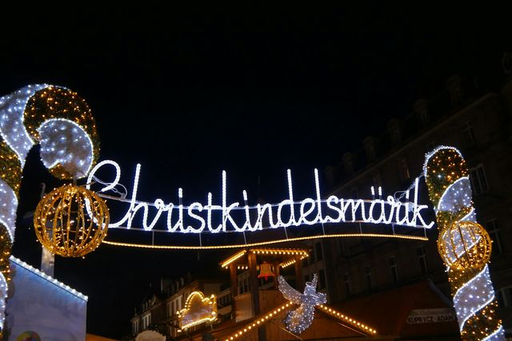
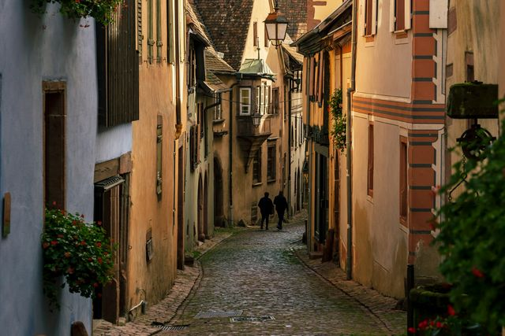

Les marchés de Noël d’Alsace
Chalets illuminés, vin chaud et villages à colombages : de fin novembre à fin décembre, l’Alsace devient la région de Noël par excellence.
Photo : Patrick Robert Doyle / Unsplash
L’Alsace est la région des marchés de Noël en France. Strasbourg, qui se dit capitale de Noël, organise le plus ancien marché du pays, et Colmar et les villages du vignoble, comme Kaysersberg ou Riquewihr, se transforment en décor de conte dès la fin novembre.
Strasbourg et Colmar sont à une demi-heure l’une de l’autre en train, et des navettes de Noël relient la gare de Colmar aux villages voisins. Chaque guide donne les dates 2026, les horaires, l’accès et nos conseils pour éviter les week-ends les plus chargés.
Marchés de Noël
-

StrasbourgLe plus ancien marché de Noël de France, place Broglie depuis 1570, et le grand sapin de la place Kléber. Ouverture le 27 novembre 2026.
-
 Colmar
ColmarSix marchés dans la vieille ville, la Petite Venise illuminée et une grande roue, du 23 novembre au 29 décembre 2026.
-
 Kaysersberg
KaysersbergUn marché d’artisans ouvert seulement les quatre week-ends de l’Avent, dans l’un des plus beaux villages d’Alsace.
-

RiquewihrUne quarantaine de chalets dans un village fortifié au milieu des vignes, tous les jours du 27 novembre au 20 décembre 2026.